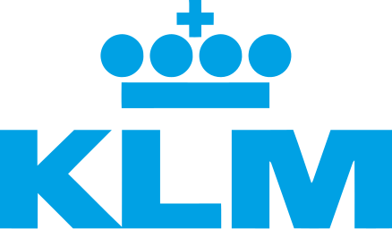

Claudia Teich Lepore, LL.M.
General Counsel
Commercial | Transactional Attorney | Trilingual
- Accomplished career transitioning small and midsize European companies and individuals to operate and do
business in U.S., providing legal guidance and ensuring compliance with applicable laws and regulations.
- Broad-spectrum of knowledge in commercial transactions and contracts, leases, corporate governance and
compliance, insurance, human resources, and civil litigation.
- Extensive operations management experience. Highly process-oriented, able to spot inefficiencies and implement
corrections. Competent in managing paperless office.
- Admitted to practice law in New York; U.S./German dual citizen; trilingual communicator with verbal and
writing proficiencies in Dutch, English, German; French reading knowledge.
- Computer savvy, early technology adopter.
Signature Strengths
Legal Counsel
International Law
Corporate Law
Corporate Governance
Legal Translation
Commercial Litigation
Contract Negotiations
Compliance Management
Operations Management
Lease Agreements
Service Agreements
Trademarks
Experience
Dr. Grewe & Partners, CPAs, LLP
Rye, NY
Accounting and tax consulting firm. Specialize in helping German companies expand operations in U.S.
2015 - Present
Legal Counsel
Advise German-owned businesses and German individuals on U.S. tax, legal, financial, and accounting issues.
Legal Representation
- Ensure compliance with tax and other legal obligations, representing clients in dealing with
financial institutions and the I.R.S. Prepare corporate resolutions.
- Negotiate company contracts involving leases, office equipment, and maintenance agreements.
Operations Management
- Streamlined acquisition and onboarding of German clients, and reduced labor bottlenecks by
improving case assessment, scope of work definition, and engagement letter submission.
- Avoided substantial non-compliance penalties for clients, building and executing due date control
system.
- Investigated and improved automation of office, spearheading implementation, and integration of
several cloud-based software programs for timekeeping, AR, project management, and due date management.
- Generated savings by eliminating duplicate resources. Organized legal contacts and information,
completed resource inventory, documented services, and centralized resources onto shared drive.
Certified Legal Translations
Rye, NY
Generated savings by eliminating duplicate resources. Organized legal contacts and information,
completed resource inventory, documented services, and centralized resources onto shared drive.
2002 - 2015
Owner & Certified Legal Translator
Translated between Dutch and English for corporations, nonprofits, and individuals.
- Selected by Attorney Translation Agency as preferred provider to translate Dutch legal documents
into English.
- Serviced corporations and nonprofits, translating leases, license agreements, corporate
resolutions, websites, and financial statements.
- Translated legal documents for individuals, including marriage documents, birth certificates,
school transcripts, and divorce decrees.
- Developed advanced document formatting skills while working with translation software.
Schiphol USA Inc/
JFK International Air Terminal LLC
New York, NY
International airport operations serving $20M passengers annually.
1998 - 2002
General Counsel
Legal advisor to Executive Committee and multidisciplinary operational teams. Drafted and negotiated
airport leases for Terminal 4 project.
- Managed and completed lease agreements for 25+ airlines, 20+ retailers/vendors/consultants, and 10 third-party service providers.
KLM Royal Dutch Airlines
New York, NY
Managed and completed lease agreements for 25+ airlines, 20+ retailers/vendors/consultants, and 10
third-party service providers.

1995 - 1998
Legal Counsel
Supported and provided legal advice to all departments and sales offices through U.S.
- Drafted and negotiated lease agreements for office buildings, and services agreements with third
party providers (ground handling companies, hotels).
- Supervised outside counsel in litigation matters, overseeing discovery process in response to
subpoenas.
- Managed court litigation involving passenger complaints and personal injury claims.
- Filed and managed service trademarks for new products and protected KLM trademarks.
European Options Exchange
(now Euronext)
Amsterdam, NL
First Options Exchange in Europe (now merged with Euronext N.V.)
1989 - 1994
Legal Advisor
Education
1994 - 1995
Master of Laws (LL.M.), Corporate Law
Erasmus University Rotterdam
The Netherlands
1973 - 1978
Dutch Law Degree
Civil Law
Corporate Law
Constitutional Law
Admission to New York State Bar
1986
Memberships
American Bar Association
Member - 1996 to Present
Accredentials + More, LLC
Board Member – 2014 to Present
Nederland-America Foundation
Fundraising Committee - 2017 to 2019
New York Circle of Translators
Member – 2002 to 2015
Certification & Continuing Education
QuickBooks, Online Certification, 2019
Tax Return Preparer Certificate, IRS, 2015
Introduction to Marketing, Wharton School, University of Pennsylvania, 2014
Software Proficiencies
Microsoft Suite Programs— Word, Excel, PowerPoint, Outlook; Adobe Acrobat Pro
TimeSlips, BillQuick Core (Time and Project Management Software), C.C.H. Axcess (Tax Preparation Software)
Citrix ShareFile, Right Signature, Sharepoint, B.N.A. Research, Wolters Kluwer Research